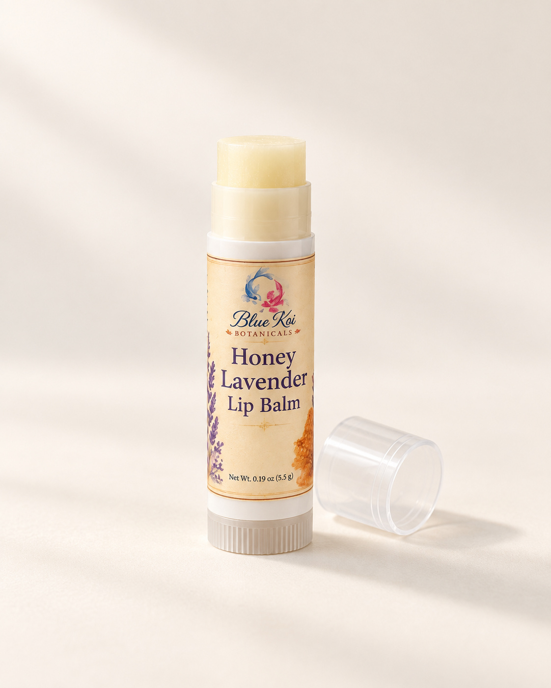
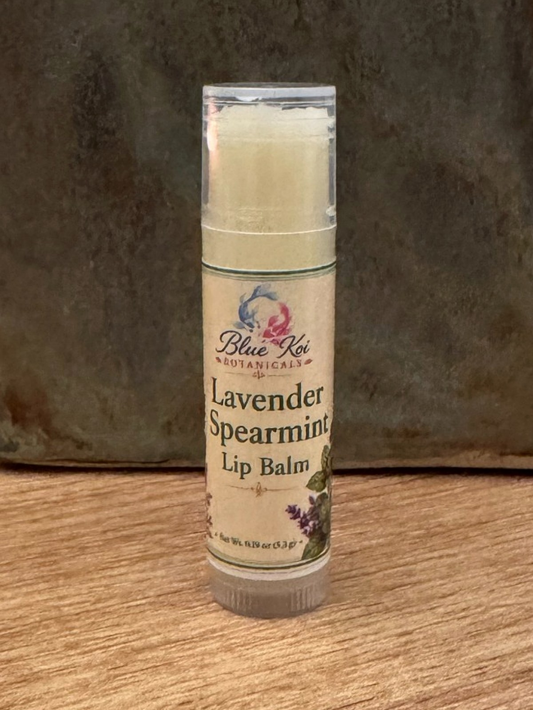

Two blends · 0.19 oz
Lip Balms
Beeswax, cocoa butter, shea butter, meadowfoam, and jojoba make a balm for dry lips. Honey Lavender is lightly sweet and floral; Lavender Spearmint has a fresh, minty scent.

Honey Lavender Lip Balm
$5Lavender with a little sweetness from honey fragrance. Made with beeswax, cocoa butter, shea butter, and plant oils.
Take a closer look
Lavender Spearmint Lip Balm
$5Herbal lavender and fresh spearmint in a beeswax balm with cocoa butter, shea butter, and plant oils.
Take a closer lookChoose your products here, then see shipping options and tax at checkout.